Overview
The package bvartools implements functions for Bayesian inference of linear time series models with a focus on vector autoregressive (VAR) and vector error correction (VEC). It separates a typical analytics workflow into multiple steps:
-
Model set-up
- Produce data matrices for given lag orders and model types, which can be used for posterior simulation. This includes a set-up for expanding window estimation.
- Set prior hyperparameters either manually or based on established approaches such as the Minnesota prior.
- Set initial values based on maximum likelihood estimates or drawing from a prior.
-
Posterior simulation
- Perform posterior simulation of coefficients, forecasts and likelihoods using algorithms from the BayesTS library.
- Researchers can also choose to use their own algorithms.
-
Evaluation
- Traditional summary statistics for individual coefficients
- In-sample performance measures (LL, AIC, BIC, HQ, WAIC, LOOIC)
- Out-of-sample performance (MAFE, RMSFE)
-
Application
- Forecasts
- Impulse response functions, including sign-restricted and caller-supplied identifications
- Forecast error variance decomposition
- Connectedness and spillover measures à la Diebold and Yilmaz (2012)
-
Storage
- Write an estimated model to HDF5 and read it back, one model per file or several addressed by group, so a long simulation need not be repeated to be analysed again.
In each step researchers are provided with the opportunity to fine-tune a model according to their specific requirements or to use the default framework for commonly used models and priors. Since version 1.0.0 the package includes simulation functions from the BayesTS C++ library, which it links to R through Rcpp and RcppArmadillo.1
For Bayesian inference of VAR models the package covers
- Standard BVAR models with independent normal-Wishart priors
- BVAR models employing stochastic search variable selection à la George, Sun and Ni (2008)
- BVAR models employing Bayesian variable selection à la Korobilis
- Structural BVAR models, where the structural coefficients are estimated from contemporaneous endogenous variables (A-model)
- Sign restrictions, which identify the shocks by the signs of the impulse responses they produce à la Uhlig (2005)
- Stochastic volatility (SV) of the errors à la Kim, Shephard and Chib
- Time varying parameter models (TVP-VAR)
- Bayesian quantile VARs, which estimate a conditional quantile instead of the conditional mean, à la Kozumi and Kobayashi (2011)
For Bayesian inference of cointegrated VAR models the package implements the algorithm of Koop, León-González and Strachan (2010) [KLS] – which places identification restrictions on the cointegration space – in the following variants
- The BVEC model as presented in Koop, León-González and Strachan (2010)
- The KLS model employing stochastic search variable selection à la George, Sun and Ni (2008)
- The KLS model employing Bayesian variable selection à la Korobilis
- Structural BVEC models, where the structural coefficients are estimated from contemporaneous endogenous variables (A-model). However, no further restrictions are made regarding the cointegration term.
- Stochastic volatility (SV) of the errors à la Kim, Shephard and Chib
- Time varying parameter models (TVP-VEC) à la Koop, León-González and Strachan (2011)2
Dynamic factor models are no longer part of this package. They moved to dfmtools, which implements the algorithm used in the textbook of Chan, Koop, Poirier and Tobias (2019).
Other CRAN packages for Bayesian VAR models, each with a different focus, are
| Package | Focus |
|---|---|
| BVAR | Hierarchical selection of Minnesota and dummy-observation priors à la Giannone, Lenza and Primiceri (2015) |
| bsvars | Structural VARs identified by exclusion restrictions, heteroskedasticity or non-normality |
| bsvarSIGNs | Structural VARs identified by sign, zero and narrative restrictions |
| bayesianVARs | VARs with stochastic volatility and global-local shrinkage priors |
| BGVAR | Bayesian global VARs |
| bvarsv | The TVP-VAR with stochastic volatility of Primiceri (2005) |
bvartools sets itself apart by its cointegrated models with priors on the cointegration space, quantile VARs, expanding window forecast evaluation and the option to plug in custom posterior samplers.
Installation
install.packages("bvartools")With an AI coding assistant
inst/agents/ holds documentation written for coding assistants: the rules that keep a bvartools analysis from quietly going wrong, and complete examples that the test suite runs. The installed package carries it at system.file("agents", package = "bvartools"), matching its version. In Claude Code it installs as a plugin:
Other assistants can be pointed at inst/agents/AGENTS.md.
Speed and R’s BLAS library
The samplers spend most of their time in linear algebra, which R hands to its BLAS library. The reference BLAS that comes with R on Windows and with many Linux builds is slow, and switching R to an optimised BLAS such as OpenBLAS speeds up estimation far more than any compiler setting. For a time varying parameter VAR with three variables and two lags, OpenBLAS halved the time of add_posterior_coefficients() and brought it level with the standalone BayesTS executable, while compiling with -O3 instead of R’s default -O2 made no difference. The BLAS belongs to the R installation rather than to the package, so it has to be changed there:
-
Windows: Replace
Rblas.dllin thebin/x64folder of the R installation with the OpenBLAS DLL renamed toRblas.dll, and copy the DLLs it depends on (for a MinGW buildlibgfortran-5.dll,libgomp-1.dll,libquadmath-0.dll,libgcc_s_seh-1.dllandlibwinpthread-1.dll) into the same folder. Keep a copy of the original file. Replace onlyRblas.dll, notRlapack.dll, which R cannot load from OpenBLAS. -
Linux: Install OpenBLAS, e.g.
sudo apt install libopenblas-devon Debian and Ubuntu, and select it withsudo update-alternatives --config libblas.so.3-x86_64-linux-gnu. Distributions using FlexiBLAS, such as Fedora, select it throughflexiblas. - macOS: CRAN’s R can switch to Apple’s Accelerate framework as described in the R for macOS FAQ.
An optimised BLAS may use several threads for each operation. When several chains or models are run in parallel processes, set OPENBLAS_NUM_THREADS=1 (or OMP_NUM_THREADS=1 for an OpenMP build of OpenBLAS) so that the processes do not compete for the same cores. OpenBLAS reads the variable once, when R starts, so it has no effect in .Renviron or on the session that sets it with Sys.setenv(). Set it in the script before the line that starts the workers, which inherit it:
Sys.setenv(OPENBLAS_NUM_THREADS = 1) # applies to workers started below
library(parallel)
cl <- makeCluster(4)
# ... parLapply(cl, ...) running the models ...
stopCluster(cl)The script’s own session keeps all cores. To restrict it as well, set the variable before R starts, e.g. OPENBLAS_NUM_THREADS=1 Rscript script.R.
For lists of models none of this is needed: add_posterior_coefficients(), add_posterior_forecasts() and add_posterior_loglik() take an argument cores for objects of class ‘modellist’ and ‘expandingwindow’, start that many workers with one BLAS thread each and stop them again. For 16 TVP models, two lag orders over eight expanding windows, eight workers cut the time of add_posterior_coefficients() from 21 to 5 seconds.
models <- add_posterior_coefficients(models, cores = 8)Seeded coefficient draws are the same on any number of workers. OpenBLAS rounds some results differently on one thread than on several, though, and a Markov chain carries that forward, so they equal those of a session that runs its BLAS on one thread rather than those of a session on several.
Usage
This example covers the estimation of a simple Bayesian VAR (BVAR) model. For further examples on time varying parameter (TVP), stochastic volatility (SV), and vector error correction (VEC) models as well as shrinkage methods like stochastic search variable selection (SSVS) or Bayesian variable selection (BVS) see the vignettes of the package and r-econometrics.com.
Data
To illustrate the estimation process the dataset E1 from Lütkepohl (2006) is used. It contains data on West German fixed investment, disposable income and consumption expenditures in billions of DM from 1960Q1 to 1982Q4. Like in the textbook only the first 73 observations of the log-differenced series are used.
# Load data
data("e1")
e1 <- diff(log(e1)) * 100
# Reduce number of observations
e1 <- window(e1, end = c(1978, 4))
# Plot the series
plot(e1)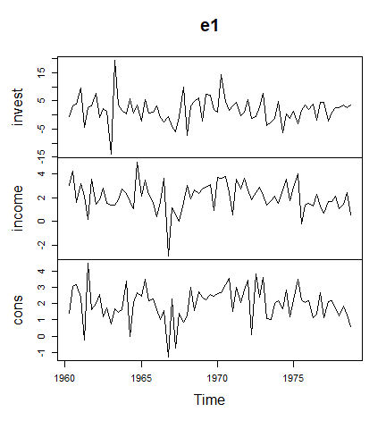
Setting up a model
The create_bvarmodel function produces an object, which contains information on the specification of the VAR model that should be estimated. The following code specifies a VAR(2) model with an intercept term. The number of iterations and burn-in draws is already specified at this stage.
model <- create_bvarmodel(e1, p = 2, deterministic = "const",
iterations = 5000, burnin = 1000)Note that the function is also capable of generating more than one model. For example, specifying p = 0:2 would result in three models.
Adding model priors
Function add_priors produces priors for the specified model(s) in object model and augments the object accordingly.
# Add uninformative prior
model_with_prior <- add_priors(model,
coef = list(v_i = 0, v_i_det = 0),
sigma = list(df = 1, scale = .0001))If researchers want to fine-tune individual prior specifications, this can be done by directly accessing the respective elements in object model_with_prior.
Adding initial values
Function add_initial_values adds initial values of posterior coefficients to model_with_prior. The default behaviour of the function is to obtain an LS estimate of the coefficients.
model <- add_initial_values(model_with_prior)To be sure, check the initial values, the function produced:
Posterior simulation of coefficients
Using the built-in functions of the package
The output of add_priors and add_initial_values can be used as the input for user-written algorithms for posterior simulation. However, bvartools also comes with built-in posterior simulation functions from the BayesTS library. By using function add_posterior_coefficients, the model input is forwarded to a posterior function and the output is added to the original object:
model <- add_posterior_coefficients(model)Using custom posterior functions
The following code sets up a simple Gibbs sampler algorithm based on the input data, which was available after the application of add_priors.
# Reset random number generator for reproducibility
set.seed(1234567)
iterations <- 10000 # Number of saved iterations of the Gibbs sampler
burnin <- 5000 # Number of burn-in draws
draws <- iterations + burnin # Total number of MCMC draws
y <- t(model_with_prior[["data"]][["train"]][["y"]])
x <- t(model_with_prior[["data"]][["train"]][["x"]])
tt <- ncol(y) # Number of observations
k <- nrow(y) # Number of endogenous variables
m <- k * nrow(x) # Number of estimated coefficients
# Set (uninformative) priors
a_mu_prior <- model_with_prior[["priors"]][["a"]][["mu"]] # Vector of prior parameter means
a_v_i_prior <- model_with_prior[["priors"]][["a"]][["v_inv"]] # Inverse of the prior covariance matrix
u_sigma_df_prior <- model_with_prior[["priors"]][["u_sigma"]][["df"]] # Prior degrees of freedom
u_sigma_scale_prior <- model_with_prior[["priors"]][["u_sigma"]][["scale"]] # Prior covariance matrix
u_sigma_df_post <- tt + u_sigma_df_prior # Posterior degrees of freedom
# Initial values
u_sigma_i <- diag(1 / .00001, k)
# Data containers for posterior draws
draws_a <- matrix(NA, m, iterations)
draws_sigma <- matrix(NA, k^2, iterations)
# Start Gibbs sampler
for (draw in 1:draws) {
# Draw conditional mean parameters
a <- post_normal(y, x, u_sigma_i, a_mu_prior, a_v_i_prior)
# Draw variance-covariance matrix
u <- y - matrix(a, k) %*% x # Obtain residuals
u_sigma_scale_post <- solve(u_sigma_scale_prior + tcrossprod(u))
u_sigma_i <- matrix(rWishart(1, u_sigma_df_post, u_sigma_scale_post)[,, 1], k)
u_sigma <- solve(u_sigma_i) # Invert Sigma_i to obtain Sigma
# Store draws
if (draw > burnin) {
draws_a[, draw - burnin] <- a
draws_sigma[, draw - burnin] <- u_sigma
}
}After the posterior simulation, function bvar can be used to collect relevant output of the Gibbs sampler in a standardised object, which can be used by further applications such as predict to obtain forecasts or irf for impulse response analysis.
bvar_est <- bvar(y = model_with_prior[["data"]][["train"]][["y"]],
x = model_with_prior[["data"]][["train"]][["x"]],
A = draws_a[1:18,],
C = draws_a[19:21, ],
Sigma = draws_sigma)Summary statistics can be obtained in the usual way using the summary method:
summary(bvar_est)##
## Bayesian VAR model with p = 2
##
## Endogenous variables: invest, income, cons
##
## Variable: invest
##
## Mean SD Naive SD Time-series SD 2.5% 50%
## invest.l1 -0.3209994 0.1280102 0.001280102 0.001286291 -0.5734283 -0.3216256
## income.l1 0.1471972 0.5653707 0.005653707 0.005653707 -0.9601798 0.1439023
## cons.l1 0.9662216 0.6767544 0.006767544 0.006777551 -0.3452887 0.9560136
## invest.l2 -0.1600464 0.1263206 0.001263206 0.001304661 -0.4048865 -0.1611636
## income.l2 0.1035875 0.5518755 0.005518755 0.005439039 -0.9653135 0.1010048
## cons.l2 0.9347698 0.6893889 0.006893889 0.006893889 -0.4164533 0.9283409
## const -1.6636708 1.7556026 0.017556026 0.017556026 -5.1131347 -1.6427596
## 97.5%
## invest.l1 -0.06831104 *
## income.l1 1.26083425
## cons.l1 2.32033944
## invest.l2 0.08747471
## income.l2 1.19676048
## cons.l2 2.28239234
## const 1.81571899
##
## Variable: income
##
## Mean SD Naive SD Time-series SD 2.5%
## invest.l1 0.043538817 0.03282873 0.0003282873 0.0003339793 -0.02134167
## income.l1 -0.152587178 0.14272417 0.0014272417 0.0014354001 -0.43483749
## cons.l1 0.287002517 0.17214572 0.0017214572 0.0017583324 -0.05263822
## invest.l2 0.049836048 0.03214857 0.0003214857 0.0003214857 -0.01314576
## income.l2 0.019208561 0.13846407 0.0013846407 0.0013846407 -0.25073551
## cons.l2 -0.008993818 0.17079324 0.0017079324 0.0017079324 -0.34237291
## const 1.577324249 0.44978283 0.0044978283 0.0044978283 0.69836815
## 50% 97.5%
## invest.l1 0.043639581 0.1077596
## income.l1 -0.152102393 0.1277937
## cons.l1 0.284571823 0.6300760
## invest.l2 0.049738086 0.1135096
## income.l2 0.020273010 0.2888129
## cons.l2 -0.009633005 0.3335256
## const 1.573285781 2.4624095 *
##
## Variable: cons
##
## Mean SD Naive SD Time-series SD 2.5%
## invest.l1 -0.002622984 0.02648002 0.0002648002 0.0002648002 -0.05469872
## income.l1 0.223177576 0.11668272 0.0011668272 0.0011668272 -0.00384140
## cons.l1 -0.263005581 0.13888117 0.0013888117 0.0013888117 -0.53917857
## invest.l2 0.033789248 0.02612399 0.0002612399 0.0002612399 -0.01770897
## income.l2 0.354398279 0.11138451 0.0011138451 0.0011302181 0.13155910
## cons.l2 -0.020350735 0.13877699 0.0013877699 0.0013661012 -0.29450792
## const 1.292295624 0.35785838 0.0035785838 0.0035785838 0.59071911
## 50% 97.5%
## invest.l1 -0.002433263 0.049704315
## income.l1 0.222296885 0.449267333
## cons.l1 -0.262529739 0.007515141
## invest.l2 0.033990454 0.085768693
## income.l2 0.356159445 0.571057742 *
## cons.l2 -0.019763112 0.254939286
## const 1.290012200 2.006568642 *
##
## Variance-covariance matrix:
##
## Mean SD Naive SD Time-series SD 2.5%
## invest_invest 22.3072220 4.0178380 0.040178380 0.044990338 15.8398654
## invest_income 0.7560915 0.7312545 0.007312545 0.008046444 -0.6330327
## invest_cons 1.2955574 0.6021675 0.006021675 0.006781077 0.2156928
## income_income 1.4378139 0.2610475 0.002610475 0.002853997 1.0191372
## income_cons 0.6442296 0.1690491 0.001690491 0.001873490 0.3596336
## cons_cons 0.9347527 0.1680653 0.001680653 0.001871957 0.6610009
## 50% 97.5%
## invest_invest 21.7999153 31.326979 *
## invest_income 0.7285783 2.294064
## invest_cons 1.2701401 2.576358 *
## income_income 1.4056673 2.037694 *
## income_cons 0.6279908 1.032157 *
## cons_cons 0.9140748 1.311783 *Note that the means of the posterior draws are very close to the results of the frequentist estimator in Lütkepohl (2006).
Inspect posterior draws
Posterior draws can be visually inspected by using the plot function. By default, it produces a series of histograms of all estimated coefficients.
plot(bvar_est)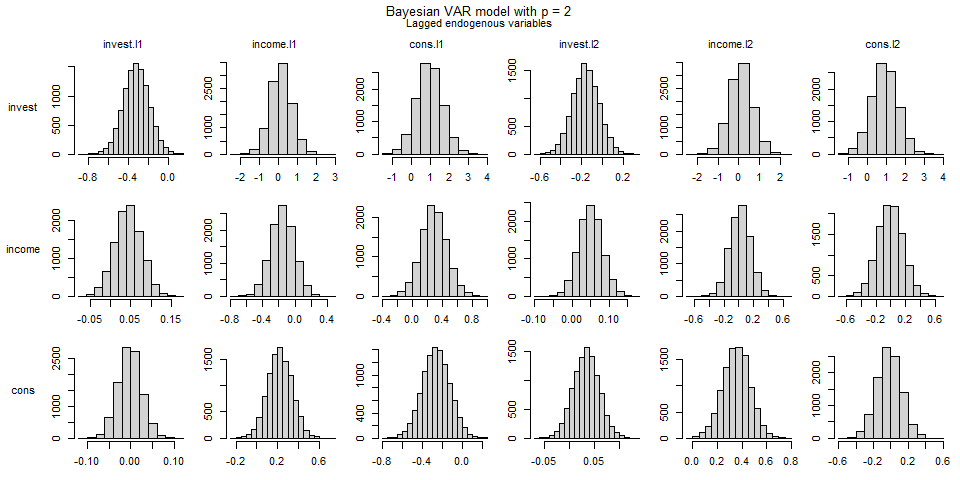
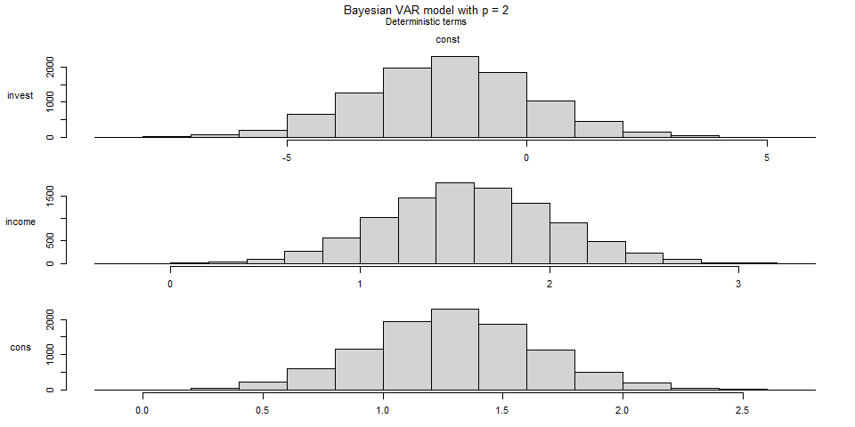
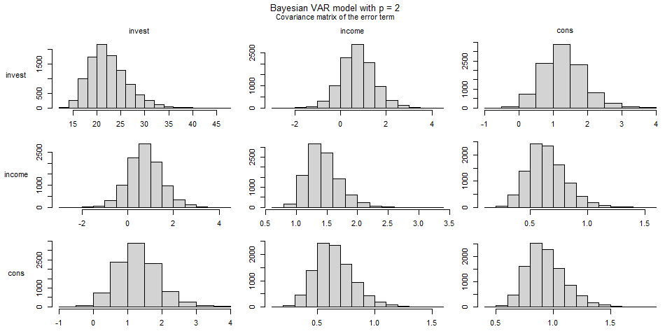
Alternatively, the trace plot of the post-burnin draws can be drawn by adding the argument type = "trace":
plot(bvar_est, type = "trace")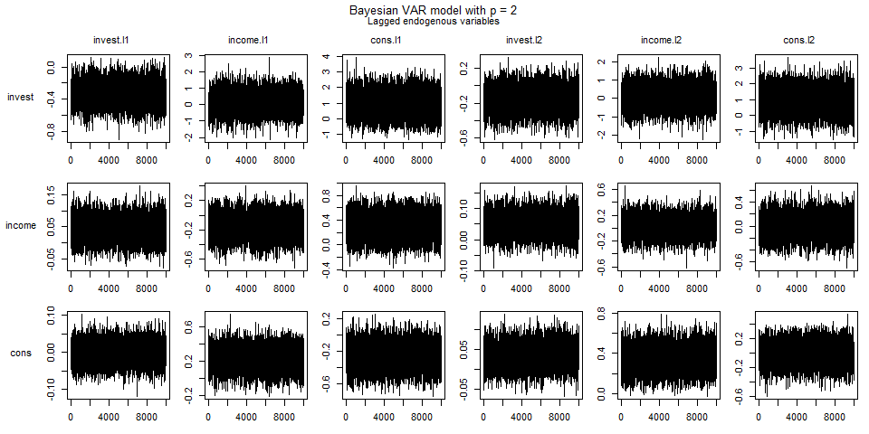
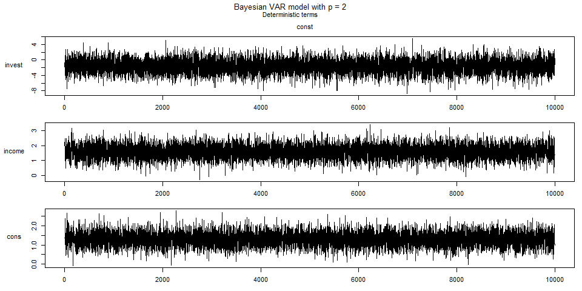
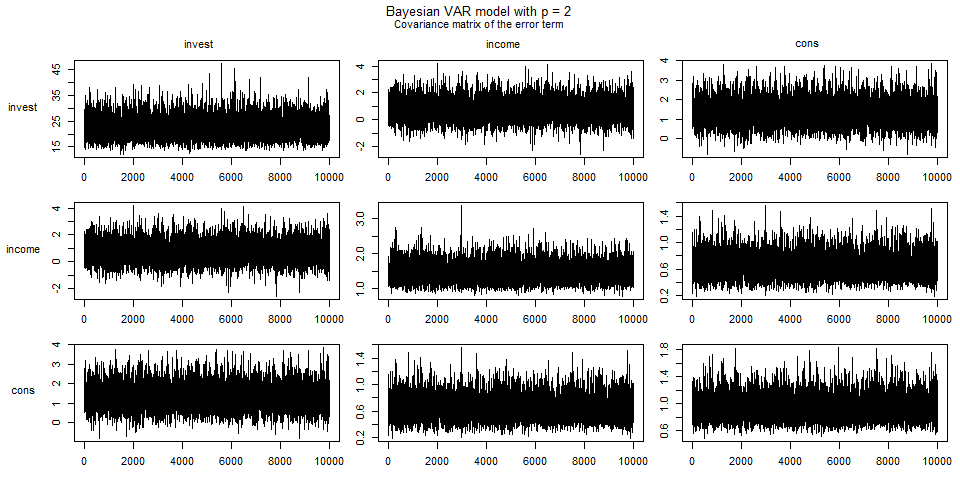
Thin results
The MCMC series in object bvar_est can be thinned using
bvar_est <- thin(bvar_est, thin = 10)Forecasts
Forecasts are obtained in two steps. Function add_forecast_input generates the data of the forecast periods, where deterministic terms can be provided in the argument deterministic and unmodelled variables in the argument exogen. If they are not provided, the function tries to obtain them from the model. Function add_posterior_forecasts then simulates the forecasts.
bvar_est <- add_forecast_input(bvar_est, n_ahead = 5)
bvar_est <- add_posterior_forecasts(bvar_est)Forecasts with credible bands can be extracted from the model using the predict function. The n_ahead argument can be used to set the given forecast horizon. However, the number of available forecast periods is limited to specification used in add_forecast_input.
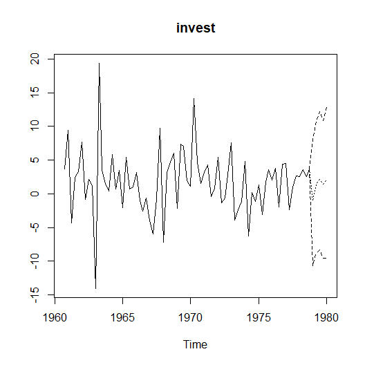
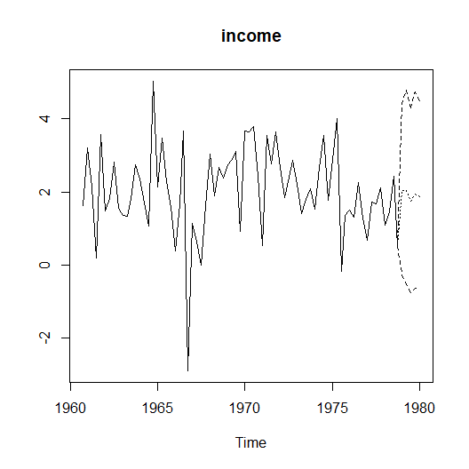
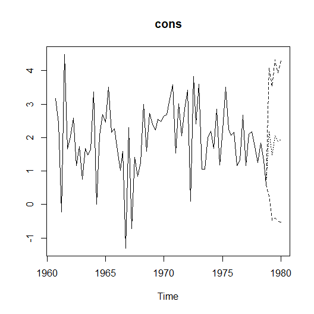
Impulse response analysis
Forecast error impulse response
IR <- irf(bvar_est, impulse = "income", response = "cons", n_ahead = 8)
plot(IR, main = "Forecast Error Impulse Response", xlab = "Period", ylab = "Response")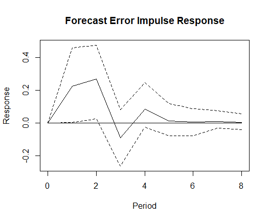
References
Chan, J., Koop, G., Poirier, D. J., & Tobias, J. L. (2019). Bayesian Econometric Methods (2nd ed.). Cambridge: Cambridge University Press.
Diebold, F. X., & Yilmaz, K. (2012). Better to give than to receive: Predictive directional measurement of volatility spillovers. International Journal of Forecasting, 28(1), 57-66. https://doi.org/10.1016/j.ijforecast.2011.02.006
Eddelbuettel, D., & Sanderson C. (2014). RcppArmadillo: Accelerating R with high-performance C++ linear algebra. Computational Statistics and Data Analysis, 71, 1054-1063. https://doi.org/10.1016/j.csda.2013.02.005
George, E. I., Sun, D., & Ni, S. (2008). Bayesian stochastic search for VAR model restrictions. Journal of Econometrics, 142(1), 553-580. https://doi.org/10.1016/j.jeconom.2007.08.017
Giannone, D., Lenza, M., & Primiceri, G. E. (2015). Prior selection for vector autoregressions. Review of Economics and Statistics, 97(2), 436-451. https://doi.org/10.1162/REST_a_00483
Kim, S., Shephard, N., & Chib, S. (1998). Stochastic volatility: Likelihood inference and comparison with ARCH models. Review of Economic Studies 65(3), 361-396.
Koop, G., León-González, R., & Strachan R. W. (2010). Efficient posterior simulation for cointegrated models with priors on the cointegration space. Econometric Reviews, 29(2), 224-242. https://doi.org/10.1080/07474930903382208
Koop, G., León-González, R., & Strachan R. W. (2011). Bayesian inference in a time varying cointegration model. Journal of Econometrics, 165(2), 210-220. https://doi.org/10.1016/j.jeconom.2011.07.007
Korobilis, D. (2013). VAR forecasting using Bayesian variable selection. Journal of Applied Econometrics, 28(2), 204-230. https://doi.org/10.1002/jae.1271
Kozumi, H., & Kobayashi, G. (2011). Gibbs sampling methods for Bayesian quantile regression. Journal of Statistical Computation and Simulation, 81(11), 1565-1578. https://doi.org/10.1080/00949655.2010.496117
Lütkepohl, H. (2006). New introduction to multiple time series analysis (2nd ed.). Berlin: Springer.
Pesaran, H. H., & Shin, Y. (1998). Generalized impulse response analysis in linear multivariate models. Economics Letters, 58, 17-29. https://doi.org/10.1016/S0165-1765(97)00214-0
Primiceri, G. E. (2005). Time varying structural vector autoregressions and monetary policy. Review of Economic Studies, 72(3), 821-852. https://doi.org/10.1111/j.1467-937X.2005.00353.x
Sanderson, C., & Curtin, R. (2016). Armadillo: a template-based C++ library for linear algebra. Journal of Open Source Software, 1(2), 26. https://doi.org/10.21105/joss.00026
Uhlig, H. (2005). What are the effects of monetary policy on output? Results from an agnostic identification procedure. Journal of Monetary Economics, 52(2), 381-419. https://doi.org/10.1016/j.jmoneco.2004.05.007